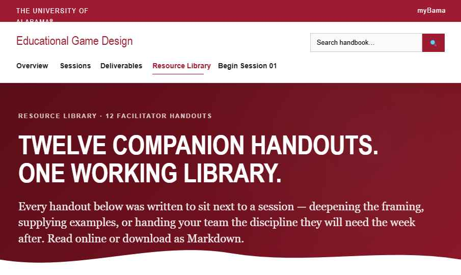
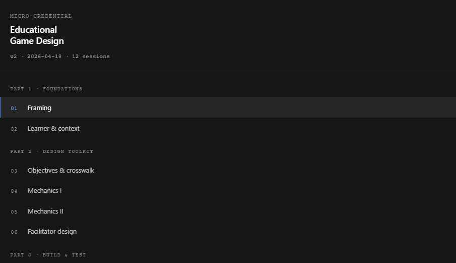
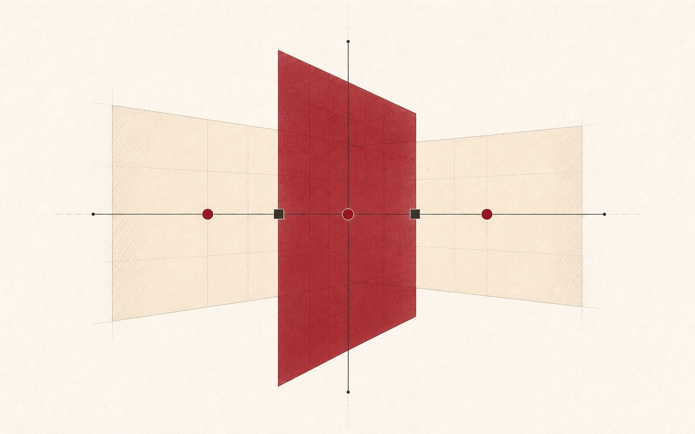
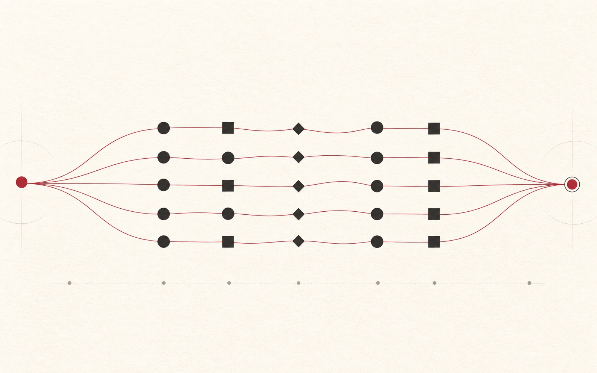
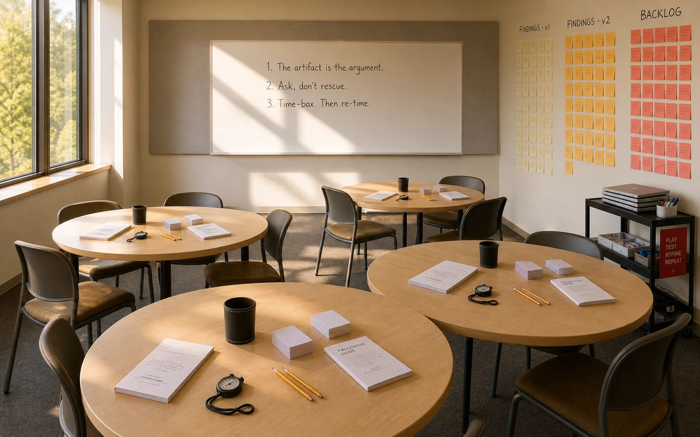

Step 01 Can Qualtrics actually do this? capability scoping
Before writing code, confirm the surface area. The Qualtrics v3 REST API exposes survey-definition / blocks / questions / flow / distributions / export endpoints — meaning a fully programmatic Pre/Post pipeline is on the table.
Can the Qualtrics v3 REST API support full programmatic survey creation — questions, blocks, flow, distribution, and response export — well enough for an end-to-end research pipeline?
Yes. Eight core endpoints cover create / blocks / questions / flow /
options / activate / distributions / export. Auth = X-API-TOKEN
header, base URL https://{datacenter}.qualtrics.com/API/v3.
Practical pattern: build a master in the UI, GET the JSON,
then POST variants from that template — safer than authoring
Matrix / Side-by-Side payloads from scratch.

Step 02 Token + datacenterauth
UA Qualtrics keeps the token + datacenter on the IDs page (Account Settings → Qualtrics IDs → API). Save the export to a local text file; never paste it into chat. The CLI reads it from disk.
My Qualtrics API token is saved at
C:\Users\jewoo\Desktop\qualtrics-token.txt. Verify the
credentials via /whoami, confirm the datacenter, and set up a
reusable client wrapper so subsequent calls don't re-read the file.
Read the file. The line starts with Token<TAB>...
so split on whitespace, take field 2. Verify against
GET /API/v3/whoami before doing anything destructive.
PowerShell · whoami probe$line = (Get-Content "C:\Users\jewoo\Desktop\qualtrics-token.txt" `
| Where-Object { $_ -match "^Token\s" })
$token = ($line -split "\s+", 2)[1].Trim()
Invoke-RestMethod `
-Uri "https://pdx1.qualtrics.com/API/v3/whoami" `
-Headers @{"X-API-TOKEN" = $token}
ResultbrandId : universityofalabama
userId : UR_2se6qQmGfufO8Em
userName : jmoon19#universityofalabama
firstName : Jewoong / lastName : Moon
email : jmoon19@ua.edu
datacenter : az1
pdx1; whoami reports
az1. Both route. Stick with pdx1 — the
documented one.
Step 03 Recon the host projectcontext-first
Don't design instruments in the abstract. Read the program first — its hypotheses, its existing in-app measures, its IRB posture — so the new survey covers only what the in-app instruments can't.
I want to add Qualtrics evaluation surveys to the TeachPlay project. Read the program's evaluation plan, IRB protocol, and existing in-app instruments first — the new surveys should cover only what isn't already measured by the handbook.
Pulled four anchors:
- Vault entity pages:
AI Microcredential GameDesign,ACHE Microcredential,IRB Studies Portfolio. - Repo at
Desktop\_projects\TeachPlay— Cloudflare Pages static, D1 SQLite, OBv3 / VC2.0 / CLR2.0 / xAPI live. - L3 evaluation plan (
docs/L3-evaluation-plan.md) names EQ1–EQ5 and lists what's already wired vs. still to build. - IRB:
HRP-503aR3 active; HRP-502 consent R4.
Already in-app: pre/post 8-skill self-assessment, exit tickets, 25-criterion rubric, κ panel, funnel, skills-growth heatmap. The Qualtrics layer needs to cover the gaps the in-app stream doesn't reach.

Step 04 Field-gap mappingresearch design
The honest version of "this field hasn't measured X" is a small table. Anything already in-app gets crossed off. Anything covered by literature but absent from the program plan becomes a candidate.
Map what this field — microcredentials × teacher PD × AI in education × game-design pedagogy — typically measures versus what it doesn't, and propose construct candidates worth including. Usability is required.
Mapped the 4-way intersection — microcredential × teacher PD × AI in education × game-design pedagogy — against published short-form scales:
| Construct | Why a gap | Short form |
|---|---|---|
| Usability (program-level) | SUS-10 too generic; 3-surface app needs targeted measure | UMUX (Lewis 2013) |
| AI literacy + AI-use SE | TeachPlay is AI; existing self-assess covers design only | Bandura task-specific + Wang 2023 |
| AI over-reliance / authorship | Negative-space rubric exists; self-report doesn't | Buçinca 2021 pattern |
| Credential value (signal/social/economic) | Microcredential lit's chronic gap | Phillips & Cohen 2023 MVS |
| Designer identity + agency | Game-design pedagogy outcome rarely measured in PD | Kafai & Fields 2018 |
| Equity-conscious design intent | UDL crosswalk exists; intent unmeasured | self-built + vignette |
| Teaching efficacy contagion | "My students will engage with what I designed" rarely captured | TSES adapted |

Step 05 Narrow to perception × efficacyscope discipline
The "everything we could measure" list has 40+ items. The "what we should measure right now" list is 5–6.
Narrow the construct list to perception and self-efficacy domains. Drop anything the in-app pre/post 8-skill self-assessment already covers.
Two-axis frame:
- Perception — usability, credential value, designer identity.
- Efficacy — AI-use self-efficacy, teaching efficacy contagion.
Demographics live in the Pre as a separate, non-substantive block so they don't compete with the construct items for attention.

Step 06 22-item budget under reliabilitymeasurement
The hard constraint: keep Cronbach's α and McDonald's ω estimable, paired-Δ analysis valid, and fit inside ~6 minutes. Rule: every construct ≥ 3 items (Hair 2019); use validated short forms only.
Constrain the post-program survey to roughly 22 items while preserving every construct's reliability and statistical assumptions — alpha/omega estimable, factor identification valid, paired-Δ interpretable. Use validated short forms only.
Composition that fits 22 substantive items + 4 tag/demographic items while keeping every construct ≥ 3:
| Block | Items | α reported | Why |
|---|---|---|---|
| UMUX usability | 4 | .79–.83 | SUS proxy at 4 items; r ≈ .80 with SUS-10 (Lewis 2013) |
| AI-use Self-Efficacy | 4 | .84+ | Pre/Post identical wording → paired d_z |
| Credential value (single composite) | 4 | .78+ | 3-factor needs 9 items; pilot can't carry |
| Designer Identity | 4 | .85 | Pre/Post identical → paired d_z |
| Teaching Efficacy Contagion | 3 | .80+ | Post-only (no baseline frame) |
Step 07 Anonymous demographicsPII-free
EQ3 (equity) needs subgroup data. The L3 plan's stance: collect minimum, opt-in for sensitive items, never break out cells with n < 10.
Add an anonymous demographics block to the pre-program survey covering, at minimum, grade level, gender, and profession type. Collect no personally identifying information; pair Pre and Post by a self-generated code.
Eight blocks, zero PII. Pairing handled by a self-generated 4-character
code — mother's first letter + birth-month 2 digits + favorite-color first
letter (e.g. K07B). Mavros 2018 pattern; expected pairing
rate 70–90 %.
| Field | Type | Note |
|---|---|---|
| D0 matching code | 4-char text | self-rule, PII-free |
| D1 profession | single-select | pre-service / K-5 / 6-8 / 9-12 / higher-ed / LXD / admin / other / PNTS |
| D2 grade level | multi-select | PreK–K, 1-2, 3-5, 6-8, 9-12, higher-ed, adult, not teaching, PNTS |
| D3 gender | single-select | woman / man / non-binary / self-describe (no PII) / PNTS |
| D4 subject | multi-select | ELA / math / sci-STEM / social / CS / arts / SpEd / multi / other / PNTS |
| D5 years teaching | bucketed | 0 / 1-3 / 4-9 / 10-19 / 20+ / PNTS |
| D6 institution | single-select | public / private / charter / higher-ed / non-school / PNTS |
| D7 race / ethnicity | opt-in multi | IPEDS, default unselected, n ≥ 10 cell rule on reporting |
Step 08 IRB protocol checkcompliance
Before issuing a single API call, confirm that the active IRB protocol
(HRP-503a R3) authorizes the instruments. The protocol lives
as a .docx, so extract its text without a Word install.
Python · zip+XML extraction (no python-docx needed)import zipfile, xml.etree.ElementTree as ET
NS = '{http://schemas.openxmlformats.org/wordprocessingml/2006/main}'
z = zipfile.ZipFile(r'...HRP-503a...R3.docx')
root = ET.fromstring(z.read('word/document.xml'))
for p in root.iter(NS + 'p'):
print(''.join(t.text or '' for t in p.iter(NS + 't')))
Result · what R3 explicitly authorizes✓ "Pre/post project surveys (UA Qualtrics)" · confidence in AI tool use
✓ "Demographic survey"
✓ "Usability logs" / structured rubric
△ H4 "perceived effectiveness for classroom-relevant gamelets"
✗ Credential value perception (NOT named)
✗ Designer identity (NOT named)
isActive=false
until R4 amendment is filed for Credential Value + Designer Identity (and
Teaching Efficacy Contagion is named explicitly).
Step 09 Build the surveyscode + API
Three Python files. qualtrics_helper.py wraps the API.
instruments.py holds every wording in one place — the
editable surface. build_surveys.py orchestrates POSTs in the
right order.
Proceed with the build. Use a reusable helper module so
all wording lives in one editable surface, leave both surveys
isActive=false on creation, and add a cohort
EmbeddedData parameter to the survey flow so anonymous links can carry
the cohort tag.
TaskCreate × 5 (IRB extract → helper → post → pre → verify). Wrote
files. First Post build hit a 400 on T2_hours_actual
(numeric validation schema mismatch). Pivoted that one item to bucketed
mc_single (less than 18 / 18-30 / 31-42 / 43-54 / 54+ /
don't remember) and resumed on the same SurveyID rather than re-creating.
qualtrics_helper.py · payload builder shapedef likert_agree(text, tag, force=True):
return {
"QuestionText": text,
"DataExportTag": tag,
"QuestionType": "MC",
"Selector": "SAVR", # single-answer vertical radio
"SubSelector": "TX",
"Choices": LIKERT_5_AGREE, # Strongly disagree → Strongly agree
"ChoiceOrder": ["1","2","3","4","5"],
"Validation": {"Settings": {"ForceResponse": "ON" if force else "OFF",
"Type": "None"}},
}
build_surveys.py · POST sequencesv = client.create_survey("TeachPlay Post-Program Survey", language="EN")
survey_id, default_block = sv["SurveyID"], sv["DefaultBlockID"]
# Tag block (3 items)
client.add_question(survey_id, qh.text_entry(t0_text, "T0_match_code", True), default_block)
add_dynamic_block(client, survey_id, default_block, TAG_ITEMS_POST[1:]) # T1, T2
# Construct blocks
b_umux = client.add_block(survey_id, "1_Usability_UMUX")
add_likert_block(client, survey_id, b_umux, UMUX, "agree")
b_aise = client.add_block(survey_id, "2_AI_Use_Self_Efficacy")
add_likert_block(client, survey_id, b_aise, AI_SE, "confidence")
# ... CredValue, DesignerID, TSEContagion
# Survey Flow w/ cohort EmbeddedData (URL param)
client.set_flow(survey_id, cohort_flow(survey_id, default_block,
[b_umux, b_aise, b_cv, b_di, b_tse]))
Result · two surveys live, inactivePOST → SV_39sdRK7OVJvSiPk (Post · 22 items · Inactive)
POST → SV_9QtpyWbqTypaFls (Pre · 20 items · Inactive)
verify SV_39sdRK7OVJvSiPk:
block_count 7 (Default + Trash + 5 added)
question_count 22
data_export_tags T0..T2 / UMUX_1..4 / AISE_1..4 / CV_1..4 / DI_1..4 / TSE_1..3


Step 10 Theme it like the rest of the programbranding
The handbook is UA Crimson #9E1B32 with Inter typography. The Qualtrics
surveys should look like the same project, not a generic data-collection
form. PUT /survey-definitions/{id}/options is full-replace, so
GET → merge → PUT.
Apply professional theming to both surveys via the
survey-options API: UA Crimson palette, Inter typography, branded header,
IRB-attribution footer, verbose progress bar, and back button. Use an
idempotent GET → merge → PUT pattern so re-runs don't drop
required option fields.
Layered TeachPlay branding on top of the auto-applied UA brand skin
(SkinLibrary: universityofalabama). Inline <style>
in the Header field overrides Crimson, Inter, button radius, hover state,
progress bar fill, accent border on hover. Footer carries IRB attribution.
qualtrics_helper.py · theme optionsdef teachplay_theme_options(survey_title):
css = ("<style>"
"body, .Skin { font-family: 'Inter', system-ui, sans-serif !important; }"
".Skin .ButtonNext, .Skin .ButtonSubmit {"
" background: #9E1B32 !important; border-color: #9E1B32 !important;"
" border-radius: 4px !important; }"
".Skin .ProgressBarFill { background: #9E1B32 !important; }"
".Skin .QuestionOuter:hover { background: #fbf7f8 !important; }"
"</style>")
header = css + "<div ...crimson left-border block, TeachPlay wordmark...>"
footer = "<div ...IRB attribution...>"
return {
"BackButton": "true",
"SaveAndContinue": "true",
"BallotBoxStuffingPrevention": "true",
"ProgressBarDisplay": "VerboseText",
"Header": header,
"Footer": footer,
"SurveyTitle": survey_title,
...
}
apply_theme.py · GET-merge-PUT (idempotent)for role, (sv_id, title) in SURVEYS.items():
current = c._req("GET", f"/survey-definitions/{sv_id}/options")["result"]
merged = {**current, **qh.teachplay_theme_options(survey_title=title)}
c._req("PUT", f"/survey-definitions/{sv_id}/options", json=merged)
Resultpost SV_39sdRK7OVJvSiPk → 200 OK
pre SV_9QtpyWbqTypaFls → 200 OK
Verifying applied options...
post ProgressBar=VerboseText BackButton=true BallotBox=true Header=set
pre ProgressBar=VerboseText BackButton=true BallotBox=true Header=set
PUT options is full-replace, not
partial. Forgetting to GET first drops SurveyProtection,
PartialData, etc. and 400s. The first attempt failed; the
GET-merge-PUT pattern is now baked into the helper.

Step 11 Verify, ship, iteratehandoff
Two surveys, themed, inactive. The remaining work is human, not API.
| Action | Owner | When |
|---|---|---|
| UI preview (desktop + mobile) | PI | Now |
| R4 amendment: Credential Value + Designer Identity (+ name TSE Contagion) | PI | Before activation |
set_active(sv, True) | PI | After R4 approval |
Cohort link: ?cohort=2026-spring | PI | At cohort enrollment |
| Cohort 1 close → export → α + paired d_z | RA + PI | +30 days |
| If matching-code pair rate < 70%, revise prompt for cohort 2 | RA | Cohort 2 launch |
| Cohort 2-3 pool (N ≥ 150) → CFA on Credential Value 3-factor | PI | Year 2 |

Files in this build
| Path | Role |
|---|---|
| eval/qualtrics_helper.py | API client + payload builders + theme |
| eval/instruments.py | All wording + tags (the editable surface) |
| eval/build_surveys.py | Entry point: post / pre / both / verify |
| eval/apply_theme.py | Idempotent themer |
| eval/_created_surveys.json | SurveyIDs + block IDs (generated) |
| eval/README.md | Operator reference (this file's denser cousin) |
| 25_Service/IRB/TeachPlay/extracted/R3_protocol.txt | R3 plain-text dump for amendment drafting |
Two failure modes worth remembering
numeric_entry400 — Qualtrics'ValidNumberschema rejects what looks like a clean payload. Workaround: bucketedmc_single. To fix properly, build a UI survey with the validation you want,GET /survey-definitions/{id}, copy the Validation block verbatim.DELETE /surveys/{id}denied by harness without explicit user authorization. Plan for it: don't create throwaway shells through the API. If you do, clean up in the UI.